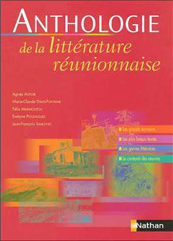

Les vacances d’été (qui sont d’hiver à la Réunion et plus longues en métropole) sont souvent l’occasion de se remettre à la lecture. Pour vous faire découvrir la richesse de la littérature réunionnaise, je vais vous envoyer lire des sites web qui vous enverront lire des livres. Peut-être votre choix de lecture pour le prochain été.
La Réunion peut s’enorgueillir d’avoir une littérature riche et singulière. L’île a dès le début inspiré les poètes et romanciers européens qui l’abordait, mais elle s’est aussi enrichie, dès le début de son
peuplement, d’une abondante littérature malgache, faite de contes (ou zistoirs) et de poésies.
On parle souvent de littérature de l’océan Indien parce que les
Mascareignes, Madagascar, les Seychelles et les Comores ont beaucoup de
points communs ce qui leur donne une culture similaire en nombreux points
(leur histoire coloniale, leurs sociétés créoles, leur insularité, etc.). A titre d’exemple, la période de l’esclavage a vu naître des succès de librairie comme le Paul et Virgine de Bernardin de Saint-Pierre (Maurice) Cette histoire de marronnage est même citée dans la nouvelle Sacatove de Charles Leconte de Lisle (Réunion).
La richesse de cette littérature de l’Océan Indien se concrétise aussi avec un grand mythe : la Lémurie. Un continent aurait jadis occupé l’Océan
Indien avant d’être englouti avec ses habitants : les lémuriens. Comme pour
l’Atlantide, les îles qui subsistent renfermeraient les vestiges de cette
ancienne civilisation.
La Réunion a vu naître les poètes parnassiens Charles Leconte de Lisle,
Auguste Lacaussade et Léon Dierx, Elle a inspiré des écrivains de passage comme Charles Baudelaire qui y a écrit des poèmes et textes. La poésie se renouvelle aujourd’hui derrière Jean Albany, avec de nouvelles génération de poètes qui font danser les mots créoles.
Deux sites retiennent depuis un moment déjà mon attention : le site des
littératures réunionnaises qui présente un large éventail d’oeuvres, d’auteurs de toutes époques et d’études sur le sujet. C’est une référence. Le deuxième site est celui de l’UDIR, un éditeur associatif local qui oeuvre pour faire connaître les auteurs de la Réunion. Leur recueil de poèmes écrit par des femmes est une réussite.
Le site de l’UDIR que je présentais alors était réalisé par un amateur pendant 10 ans mais en 2008 l’association a présenté son nouveau site, plus coloré sous un nouveau nom de domaine (en .org comme moi). Comme les deux sites subsistent, j’ai conservé les anciennes références :
J’aimerais tant vous présenter les quelques bouquins notables que j’ai découvert comme je l’ai fait avec les guides de tourisme mais la production réunionnaise est si abondante que l’été ne me suffira pas ; je vous laisse donc aussi avec la page des livres (hors ligne) de l’ARCC qui pourra peut-être vous guider. Et puisqu’il faut aussi vous inciter a sortir pendant l’été, pourquoi ne pas tenter une escapade à Ouessant pour le salon du livre insulaire.

En parcourant les extraits, notamment en créole réunionnais, présentés chronologiquement, le lecteur découvre un patrimoine culturel dans lequel il peut puiser et poursuivre ensuite la découverte en allant plus loin dans la lecture des oeuvres.
Nathan, septembre 2004
{% fnac "antologie", "https://www.fnac.com/a1607372/Agnes-Antoir-Anthologie-de-la-litterature-Reunionnaise" %}